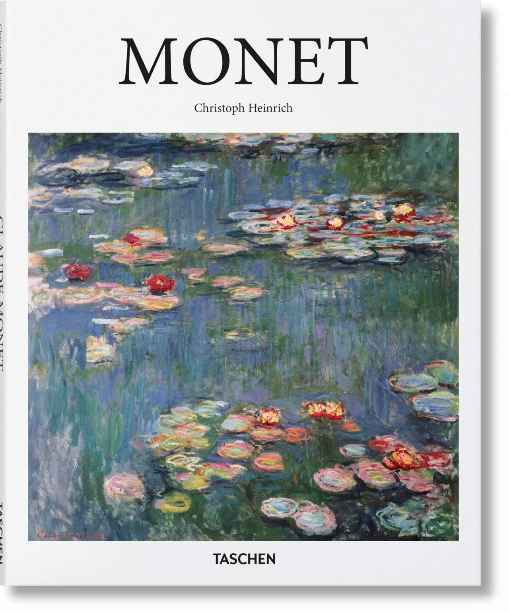

NENÚFARES |
|
El título Nenúfares no se refiere a un cuadro en concreto sino a una serie completa de Monet. Durante su vida, este genio impresionista pintó cientos de obras protagonizadas por nenúfares. ¡Más de 250! |
|
Existen aproximadamente 250 nenúfares pintados por Monet en los últimos años de su vida. El ya anciano pintor vivía en el Jardín de Giverny, donde instaló un puente japonés y un estanque con plantas exóticas que le servirían de modelo e inspiración. Monet ya estaba consagrado pero siguió investigando las posibilidades pictóricas de las variaciones del color de un mismo tema, dependiendo de las horas del día o las estaciones del años. En estas últimas obras, las formas están ya prácticamente disueltas en manchas de color. Muchos historiadores de arte y oftalmólogos afirman que al sufrir Monet de cataratas, el artista veía tras un filtro borroso y amarillento. De hecho, tras ser operado, volvió una temporada a su estilo anterior. De toda esta serie de nenúfares, quizás los más famosos y espectaculares son los paneles que se exhiben en el Museo de la Orangerie de las Tullerías, en París. Monet los pintó para ser expuestos en una estancia circular de 360º y son considerados “La Capilla Sixtina del Impresionismo”.
|